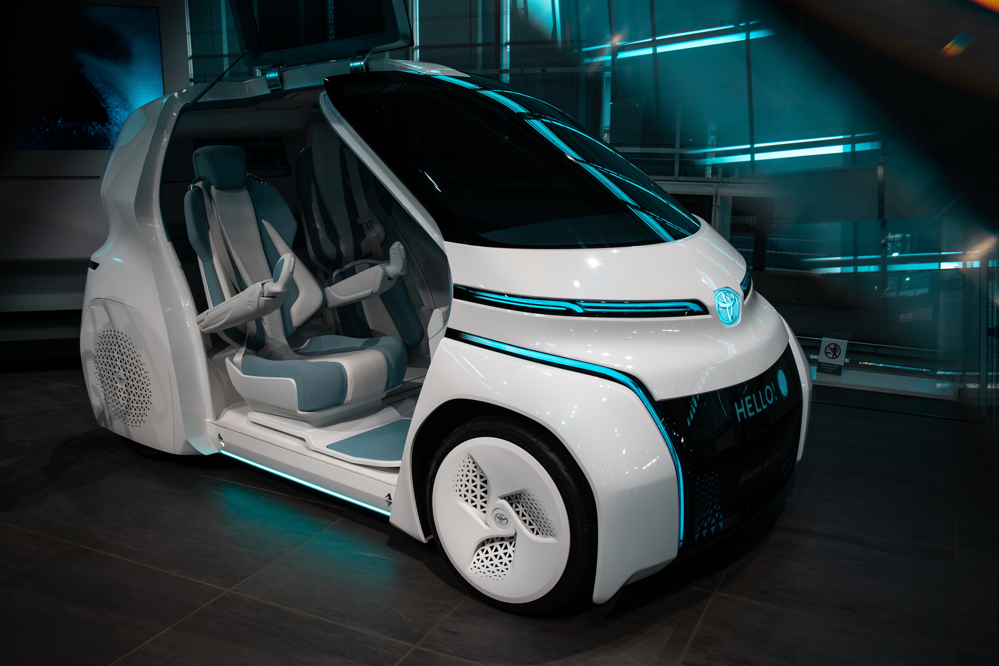
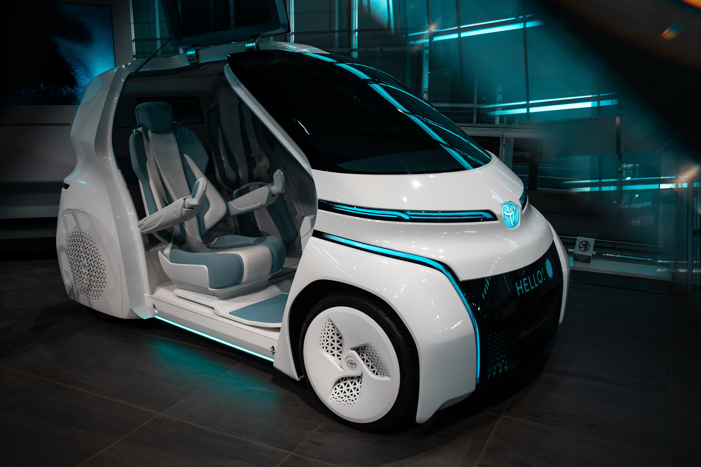

친환경자동차(Green Car)는 에너지 소비 효율이 우수하고 무공해 또는 저공해 기준을 충족하는 자동차를 말한다. 즉 기존 내연기관차보다 대기오염물질이나 이산화탄소 배출이 적고 연비가 우수한 자동차로, ‘그린카’라고도 불린다. 친환경차에는 ‘환경친화적 자동차의 개발 및 보급 촉진에 관한 법률’ 에서 정의된 전기 자동차, 태양광 자동차, 하이브리드 자동차, 연료전지 자동차, 천연가스 자동차, 클린 디젤 자동차 등이 있다.
 

정부는 친환경 정책에 의거하여 각종 전기차 장려 정책을 펴고있다. 2020년 기준 전지차 지원금은 정부 약 800만원에 지자체 약 500~800만원을 합한 1300~1600만원 정도를 지원금으로 지급한다. 또한 취등록세 170만원을 면제해준다. 친환경에 대한 사람들의 인식이 변화하고, 세계적으로도 친환경 정책이 대세로 자리잡고 있어 내연기관 자동차는 점점 줄어들고 전기차와 같은 친환경 차량의 시장규모와 판매량은 계속 늘어날 전망이다. 특히 국내에서는 최근 3년 사이에 판매량이 급격이 늘었으며 앞으로도 더 가속화될 것으로 보인다.